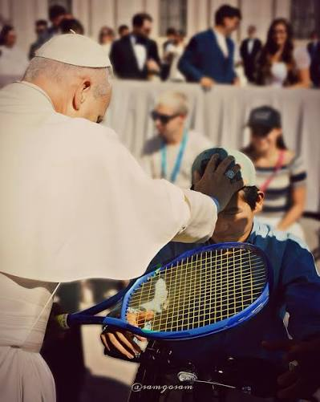

El Papa es el máximo representante de la Iglesia católica y una de las figuras religiosas más influyentes del mundo. Su misión consiste en guiar espiritualmente a millones de fieles,
promover los valores del amor, la paz, la solidaridad y la justicia, y fomentar el diálogo entre las diferentes culturas y religiones.
¿Quién es el papa actual?
Actualmente, el papa es León XIV, su nombre real es Robert Francis Prevost Martínez. Nació el 14 de septiembre de 1955 en Chicago, Estados Unidos.
Desde joven se interesó por la religión y estudió Matemáticas en la Universidad de Villanova.
Su camino hasta convertirse en Papa
Después de estudiar Matemáticas y Filosofía, Robert Prevost ingresó en la Orden de San Agustín y fue ordenado sacerdote en 1982. En 1985 comenzó su trabajo misionero en Perú,
donde desarrolló gran parte de su labor religiosa.
En 2014 fue nombrado obispo de Chiclayo y, en 2023, el papa Francisco lo llamó a Roma. Finalmente, el 8 de mayo de 2025 fue elegido Papa, adoptando el nombre de León XIV.
¿Qué actividades hace el papa a diario?
El papa realiza bastantes actividades: rezar y celebrar misa, leer documentos, tener reuniones, preparar discursos, etc. Además, fuera de lo laboral, realiza muchas más actividades: juega tenis, lee libros, sale a caminar, nada y viaja de gira por muchos países

La llegada de León XIV a Uruguay
El papa León XIV visitará Uruguay entre el 6 y el 8 de noviembre de 2026. Su llegada está prevista para el viernes 6 al Aeropuerto Internacional de Carrasco, en Montevideo. Durante su estadía se reunirá con el presidente Yamandú Orsi y participará en diferentes actividades
religiosas y sociales.
Visitará 3 departamentos:
Montevideo
El papa llegará a Montevideo el viernes 6 de noviembre a las 16:30 y permanecerá en Uruguay hasta el domingo 8. Durante su estadía visitará Plaza Independencia, se reunirá
con el presidente Yamandú Orsi, visitará Casavalle y la Universidad Católica, y participará en una vigilia de oración en el Estadio Centenario.
Paysandú
El sábado 7 de noviembre llegará a Paysandú a las 9:10 y permanecerá allí hasta las 12:45. Su principal actividad será celebrar una misa en el Parque París Londres.
Luego regresará a Montevideo.
Florida
El domingo 8 de noviembre visitará Florida para celebrar una misa a las 10:30 frente a la Catedral Basílica, donde se encuentra el Santuario Nacional de la Virgen
de los Treinta y Tres. Después continuará su viaje hacia Argentina.
Te invitamos a conocer sobre las adicciones
En el enlace que aparece debajo podrás ingresar a una página web que trata sobre las adicciones, sus consecuencias, cómo prevenirlas y afrontarlas.